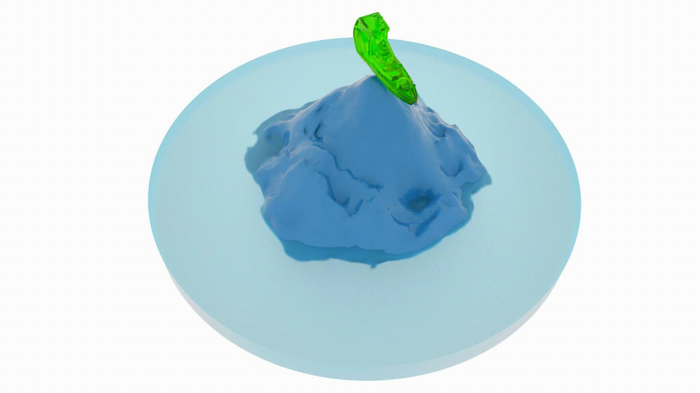
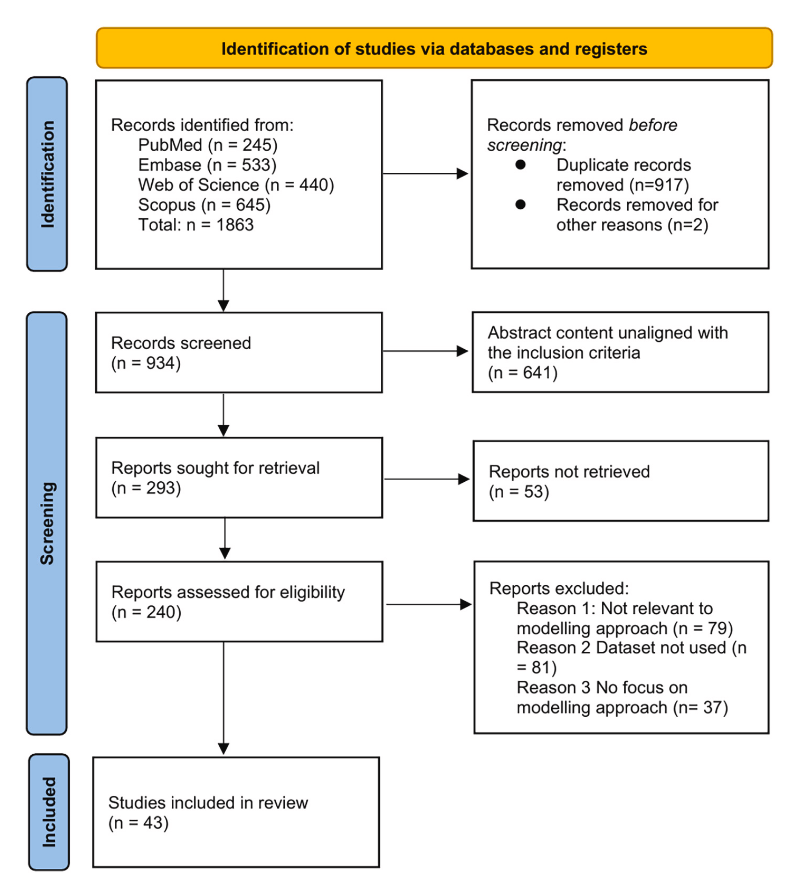

|
Towa Shixun Huang (黄诗迅)
I'm a 4th year undergraduate at University of Toronto studying Mathematics and Computer Science. During my undergraduate studies, I'm fortunate to be supervised by Professor Jude Kong and Professor Eitan Grinspun. I'm part of the DGP lab, where I work with Yue Chang.
I aim to combine mathematical structure with machine learning to develop computational frameworks that are stable, interpretable, and capable of strong generalization. My work focuses on data-assisted—rather than purely data-driven—approaches grounded in optimization, differential equations, and numerical modeling, allowing data to guide or accelerate computation without replacing underlying structure.
Email /
CV /
Github
|
|
|

|
A Convex-Inspired Neural Construction for Structured and Generalizable Nonlinear Model Reduction
Shixun Huang,
Eitan Grinspun,
Yue Chang
arXiv preprint, 2025
paper
A convex-inspired neural formulation for real-time deformable simulation that generalizes to unseen forces while maintaining compact representations and interactive performance.
|
|
|
|

|
A systematic review of mathematical and machine learning models of Avian Influenza
Shixun Huang,
Nicola Luigi Bragazzi,
Zahra Movahedi Nia,
Murray Gillies,
Emma Gardner,
Doris Leung,
Itlala Gizo,
Jude D. Kong
One Health, 2025
paper
A systematic review assessing mathematical, statistical, and machine learning models for understanding Avian Influenza dynamics, predicting outbreaks, and evaluating intervention strategies.
|
|
Undergraduate Research Assistant
Advisor: Eitan Grinspun, Yue Chang
Developing input-convex model reduction for physics-based simulations.
|
|
Undergraduate Research Assistant
Advisor: Jude Dzevela Kong
Building epidemiological models with Bayesian inference for infectious disease dynamics.
|
- MAT186: Calculus I, University of Toronto, Teaching Assistant, Fall 2025
- MAT187: Calculus II, University of Toronto, Teaching Assistant, Winter 2026
|
|
Superconductor Transition Temperature Prediction | PyTorch, Transformer | Nov 2024 - Dec 2024
Built a Transformer-based PyTorch model that encodes crystal structures (from Materials Project CIFs) into compact vectors to predict superconducting transition temperatures, achieving preliminary MAEs ≈ 0.85–0.99.
|
|
Numerical Methods for Option Pricing | Matlab, Iterative Method, Finite Difference | Mar 2025 - Apr 2025
Implemented and analyzed finite-difference and iterative solvers in MATLAB for European and American put options (Black–Scholes), including constrained optimization via projected SOR and visualization of convergence behavior.
|
|
{kind=link}